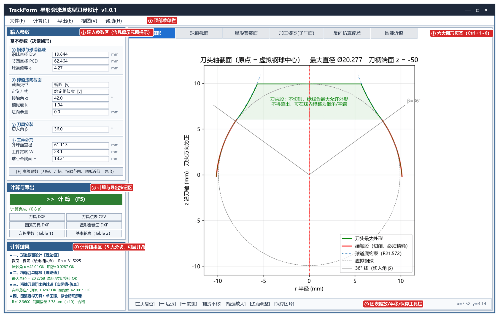
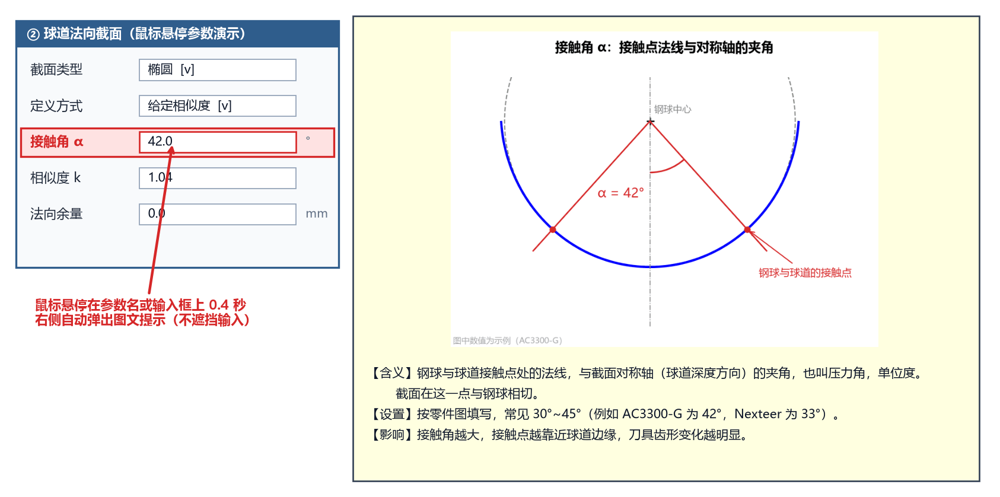
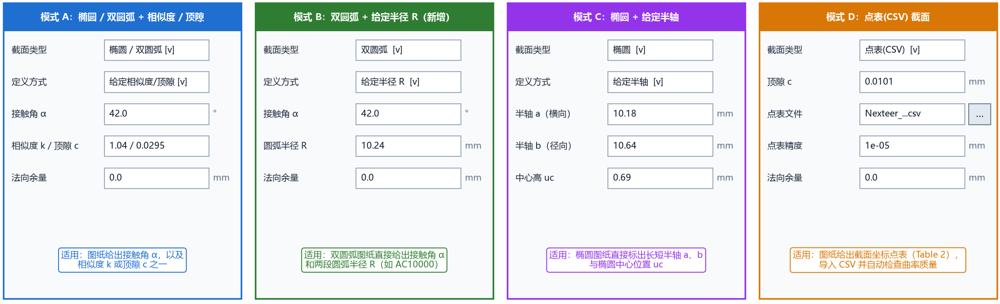

界面布局与基本操作
TrackForm 采用直观的“左控右图”工程界面布局：左侧集中完成参数输入、计算触发、文件导出与数值结果核对；右侧通过 6 个专业图形页签全方位展示刀具廓形、球道截面、零件剖面、加工姿态与偏差曲线。

1. 六大功能分区概览
对照上图中的红色编号徽标，主界面分为以下六个区域：
| 区域编号与名称 | 核心功能与操作说明 | ||
|---|---|---|---|
| ① 顶部菜单栏 | 包含 文件(F)、计算(C)、导出(E)、视图(V)、帮助(H) 五大菜单，提供参数载入/保存、内置示例调用（AC3300-G、AC10000、Nexteer_34205673、AC0706-E）、恢复默认设置、页签切换与打开数据目录等功能。 |
||
| ② 输入参数区 | 按 `参数名称 \ | 输入框 \ | 单位` 三列整齐排列。上方为决定刀具齿形的 基本参数（4 个分组，19 项），下方为可点击展开/折叠的 ▸ 高级参数（6 个分组，18 项）。面板高度随内容自适应，超出屏幕时支持鼠标滚轮平滑滚动。 |
| ③ 计算与导出区 | 顶部为醒目的绿色 ▶ 计算 (F5) 大按钮；中间为实时状态栏与进度条；下方为两列排布的 6 个导出按钮（一键导出 3 种 DXF 图纸与 3 种 CSV 表格）。 | ||
| ④ 计算结果区 | 按 5 大分块清晰输出：一、球道截面设计【理论值】、二、精确刀具廓形【理论值】、三、精确刀具切出的球道【实际值·仿真】（含钢球实际落座测量）、四、圆弧近似刀具（支持单圆弧与多段相切圆弧，含实际落座审核）、五、轮廓方程常数 Table 1。点击标题栏右侧的 ⤢ 展开 按钮（或双击文本框）可在独立宽窗口中查看并一键复制。 | ||
| ⑤ 六大图形页签 | 包含 刀具廓形、球道截面、星形套截面、加工姿态(子午面)、反向仿真偏差、圆弧近似 6 个页签，支持鼠标点击或按快捷键 Ctrl+1 ~ Ctrl+6 快速切换。 |
||
| ⑥ 图表导航工具栏 | 位于每个图形页签底部，提供主页复位、前后视图回退、拖拽平移、框选局部放大、边距调整与单张图片保存功能；右侧实时显示鼠标所在位置的精确坐标 (x, y)。 |
2. 四项高效交互设计
（1）鼠标悬停查看“参数示意图 + 说明卡片”
填写参数时如果对某个尺寸的定义或图纸位置不确定，只需将鼠标指针悬停在参数名称或输入框上约 0.4 秒，参数栏右侧就会自动弹出图文提示卡片：

- 上方高清几何示意图：基于真实星形套与刀具几何绘制，并用鲜艳的红色（
#d62728）精准标出当前参数在球道、工件或刀具上的几何位置。 - 下方结构化说明：按 【含义】（物理定义与单位）、【设置】（如何对照零件图填写及常见数值范围）、【影响】（修改该参数会对刀具齿形或校验结果产生什么影响）三段清晰呈现。
- 不遮挡输入：提示卡片固定显示在左侧参数框的右外侧，绝不遮挡您正在编辑的输入框；点击输入框开始打字或移开鼠标时自动收起。
- 导出按钮同样支持悬停提示：将鼠标悬停在下方 6 个导出按钮上，也会弹出该导出文件的具体内容说明。
（2）参数智能显隐（只显示当前起作用的项）
- 在 ② 球道法向截面 分组中，当您切换
截面类型（椭圆/双圆弧/点表(CSV)）时，定义方式下拉框会自动过滤为该截面适用的选项（例如选椭圆时提供给定相似度 / 给定顶隙 / 给定半轴；选双圆弧时提供给定相似度 / 给定顶隙 / 给定半径 R），并自动隐藏无关输入框，只保留当前模式下需要您填写的项：

- 在 ▸ 高级参数 → 圆弧近似 分组中，当
圆弧段数选1（单圆弧）时会显示单圆弧求法（拟合精确廓形/按审核优化）；当圆弧段数选2 ~ 5（多段相切圆弧）时会自动隐藏单圆弧求法。
（3）贴心的输入容错与防误触设计
- 中英文小数点自动兼容：在中文输入法状态下不小心把小数点打成了中文逗号
，或英文逗号,（例如输入19，844），软件在计算时会自动将其识别为标准小数点19.844，无需反复切换输入法。 - 滚轮防误改下拉框：在左侧参数区使用鼠标滚轮上下滚动浏览参数时，即使鼠标经过下拉选择框，也只会滚动面板而不会误改动下拉框的选项。
（4）清晰的状态栏颜色反馈与导出防呆
状态栏位于绿色 ▶ 计算 (F5) 按钮正下方，通过不同颜色和文字实时反馈软件当前状态：
- 启动时自动恢复上次设置：软件启动时自动载入上次关闭前的参数，状态栏显示
已恢复上次的设置。请点“计算”开始。 - 后台多线程计算不卡顿：点击计算后，右侧出现动态进度条，状态栏依次显示当前阶段（
正在计算刀具廓形…正在过切校验…正在反向仿真…正在近似圆弧刀具…/正在按审核优化圆弧（第 N 步）…正在计算轮廓方程常数…）及实时秒表，计算期间窗口仍可正常拖动或展开查看。 - 未重算与异常导出防呆保护：只要您改动了任何一个参数输入框，状态栏立即变为橙色提示
参数已修改，请点“计算”更新结果。如果您忘记点击“计算”就直接点导出按钮，或者当前计算结果存在异常报警（如刀尖截断导致实际顶隙不足、过切、圆弧刀具超差、实际接触角/跨距/顶隙超出范围），软件在导出前都会弹出确认对话框提醒您，防止误将过期或不合格的刀具图纸发往车间。